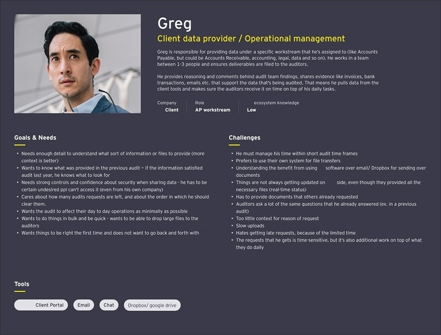
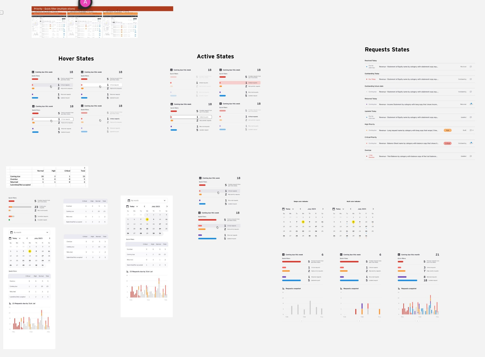

Audit Client Portal — Customer Experience Redesign
How we discovered that a portal's real problem was not navigation or broken features — it was that neither auditors nor clients could see the same picture at the same time.

How we discovered that a portal's real problem was not navigation or broken features — it was that neither auditors nor clients could see the same picture at the same time.
The brief was clear: the Client Portal had usability issues. Navigation was confusing, the issue tracker was cumbersome, and clients were struggling to complete requests. Fix those things and the portal would perform.
The brief was wrong. Or rather, it was incomplete.
When we started talking to users, a pattern emerged that no ticket or stakeholder briefing had captured: clients were not struggling with the portal because of bad UI. They were avoiding it entirely. The portal was not their platform — it was an external company's system that they were expected to learn and use infrequently, under time pressure, for an audit they did not fully understand.
"The average client user's attitude to the portal was avoidance — it was too confusing and daunting. This is not their own work platform, but an external company's platform."
— Research finding, Discovery phaseThe consequence was systemic: coordination defaulted to email. Audit teams spent time chasing clients through a channel they had no visibility into. Requests fell behind. Trust eroded — on both sides.
The real problem: neither party had a shared, unambiguous picture of what was outstanding, what was urgent, and what was coming due. That shared visibility was what the redesign needed to create.
Problem space — portal avoided, email becomes default, visibility gap widens
As Experience Design Lead, I owned the end-to-end UX process — from discovery through to production handoff — working within a cross-functional team that spanned UX research, product management, engineering, and business stakeholders.
I led the research phase jointly with a fellow researcher, designed the study protocol, facilitated stakeholder workshops, produced all wireframes and prototypes, and coordinated the usability testing sessions.
Stakeholder alignment was a critical part of the role. The redesign touched multiple product teams and business sponsors across EY globally.
Experience Design Lead (Me)

The discovery phase was designed around a single question: how do auditors and their clients actually coordinate on request completion — and where does that process break down? We ran a series of 1:1 user interviews across seniority levels and geographies before a single design decision was made.
Journey map — Client data provider fulfilling audit requests · Key pain points clustered around portal access and navigation



With research synthesised into clear user needs, we ran structured ideation sessions using How Might We questions to convert problem areas into design opportunities. These were then filtered through stakeholder workshops and a decision tree to determine which opportunities had both the highest user value and business viability.
How might we reduce the time audit teams spend on manual status updates?
Audit StatusHow might we show clear metrics on overdue, coming due, and high-priority items at a glance?
Request VisibilityHow might we give clients contextual information to understand audit findings without needing a tutorial?
Client AnalyticsHow might we surface the most relevant KPIs for both operational and strategic decision-making?
Landing PageHow might we create a seamless navigation experience that requires no re-learning on each visit?
Navigation UXHow might we allow bulk actions on requests to reduce individual task overhead?
Request ManagementI used a structured decision tree approach with stakeholders: each potential feature was evaluated against evidence from user research findings during workshops. This meant that by the time wireframing started, there was existing agreement on what to build and why.
Features were scoped across three horizons: Autumn 2023 (foundational UX), Spring 2024 (analytics and calendar), and beyond (risk radar, client priorities tracking, ecosystem expansion).
Feature decision tree — structured consensus before design began


Two competing design concepts were taken to wireframe quality for user testing — a Calendar concept and a Timeline concept. Each approached the core problem from a different angle. We had a hypothesis about which would win. The users told us something more interesting: both were partly right, and neither was sufficient alone.
Showing stages are not generally understood by the client data providers
Summary stats (overdue, coming due, outstanding) tested as the three most useful data points for both sides
Drill-down from summary to filtered request list was highly requested — users wanted the macro, then the micro
Calendar view was seen as overwhelming — too many items visible simultaneously without hierarchy
Familiar mental modal but week view did not help clients focus on what matters right now
Useful insight retained: due date emphasis and week-level planning were genuinely valued — this was extracted into the final design

"Top three most beneficial for both clients and audit teams: overdue, coming due, and general summary of request status — that is what they are mainly communicating on anyway."
— Kristen (US), Usability Testing ParticipantThe solution that emerged was not either concept — it was a synthesis. The Timeline's summary statistics and progress arc became the spine of the redesigned landing page. The Calendar's week-level focus was preserved as a secondary view mode, specifically for client data provider users who think in terms of deadlines rather than milestones. The key design move was building a contextual index: clicking any summary stat filters the request list — giving users the macro picture with one-tap access to the micro detail.





Evaluating the transformation side-by-side demonstrates how transitioning from a disjointed document index to a structured tracking strategy directly solved coordination friction across both client and auditor personas.
The Friction Window: An opaque file management library. Client users faced ambiguous directory strings, nested hierarchies, and a total lack of status confirmation markers. Coordination naturally collapsed into manual email loops.

The Clarity Window: A high-fidelity task dashboard grouping action items transparently by immediate priority (Overdue, Coming Due, Active Stream). Real-time progress confirmation loops sync across profiles instantly.


Measured post-testing via structured BUX evaluation, NPS survey, and benefit realization framework
9,224 instances of client feedback were recorded across 2,765 client accounts — a 5% increase in account penetration year-over-year. The redesigned platform did not just score better in testing. It was being used.

This project reshaped how I approach enterprise redesigns — particularly the relationship between the stated problem and the real one, and between testing a concept and testing an assumption.